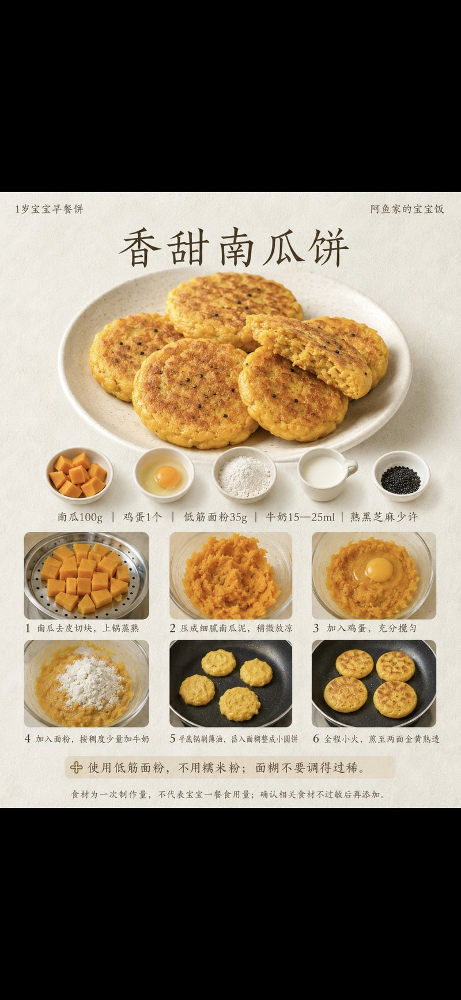
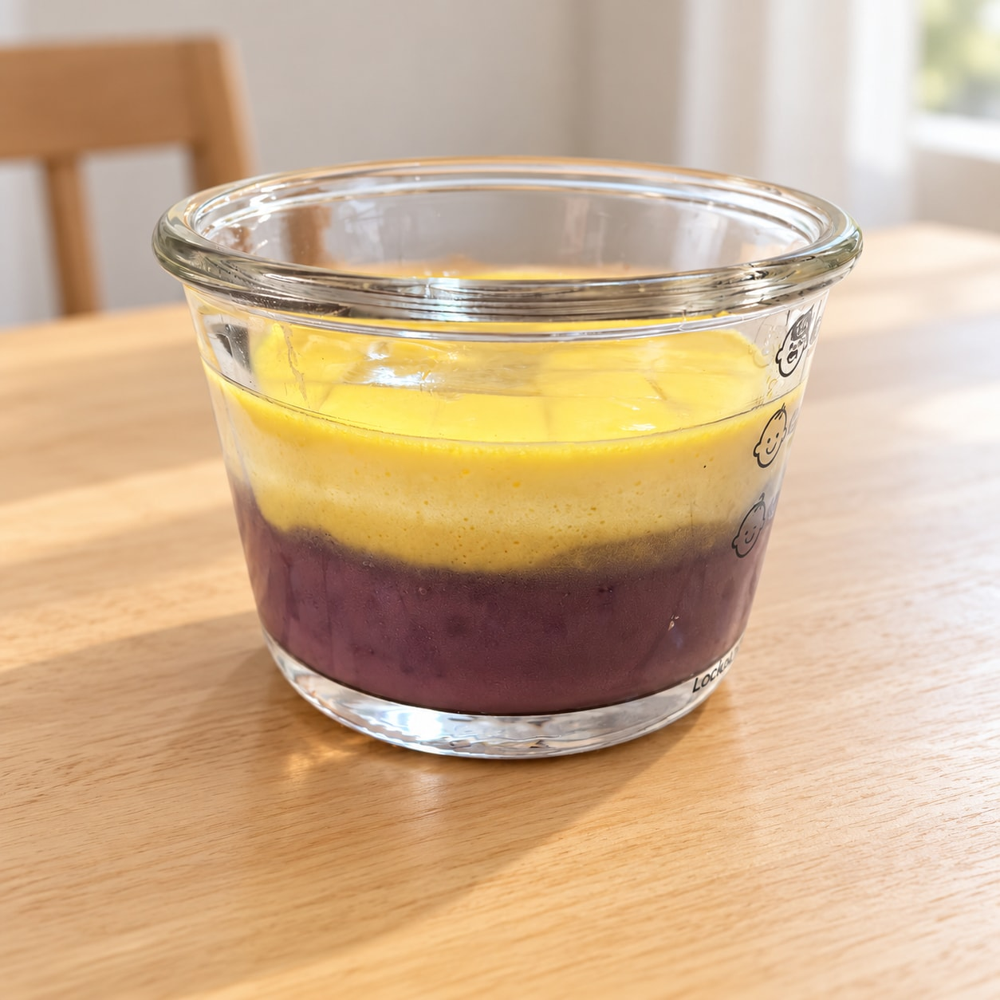
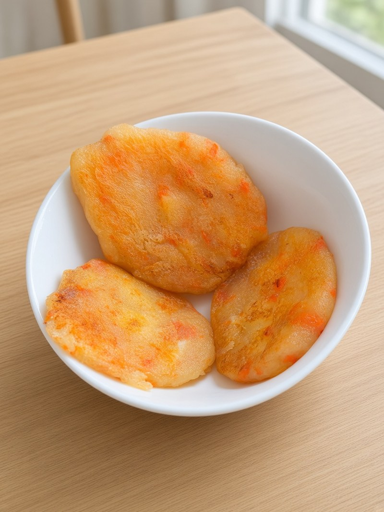

周一 10.19
南瓜小饼 · 牛肉奶酪苹果饼 · 紫薯蒸蛋
早餐
南瓜小饼 + 宝宝酸奶
碳水 低筋粉 + 南瓜泥蔬菜/果 南瓜蛋白 蛋 + 宝宝酸奶脂肪 奶 + 少量油
食材
- 老南瓜适量，蒸软压泥
- 鸡蛋约 1/2–1 个
- 低筋面粉适量
- 配方奶少量调糊
- 可点黑芝麻少许；少量油；不加糖
- 宝宝酸奶一小份
做法
- 南瓜蒸软压泥，与蛋、低筋粉、少量配方奶调成稠糊；可点黑芝麻。
- 少油小火摊成小饼，两面煎透至中心全熟，切条手抓。
- 配宝宝酸奶一小份；不加盐糖。

做法步骤参考图（图源小红书）；用量以上面蕉蕉分量为准，不加盐糖酱油。南瓜小饼：南瓜泥+蛋+低筋粉+奶，小火煎透；可点黑芝麻；不加糖。图源小红书；用量以上面蕉蕉分量为准。
午餐
牛肉奶酪苹果饼（家里剩）+ 水煮西兰花 + 软饭约 20–25g
碳水 软饭约 20–25g蔬菜 西兰花蛋白 牛肉馅 + 奶酪（饼内）脂肪 辅食油合计约 5g
食材
- 家里剩的牛肉奶酪苹果饼（含牛肉馅、奶酪、苹果等）
- 西兰花适量
- 软米约 20–25g（生米）
- 辅食油合计约 5g（含炒/煎用油）；不加盐
做法
- 剩饼先少油煎热，再上锅蒸至切开无粉红、中心全熟。
- 西兰花水煮/焯至软，切小。
- 另煮软饭：生米约 20–25g 煮软；整餐辅食油合计约 5g（含煎用油；不足再补足，勿另加一份 5g）。
- 不加盐、酱油、生抽。
家里剩饼：先煎熟、再蒸至切开无粉红。软饭按生米约 20–25g；辅食油合计约 5g。
下午餐
紫薯蒸蛋 + 蓝莓
碳水 紫薯水果 蓝莓蛋白 全蛋脂肪 —
食材
- 紫薯适量，蒸软压泥/切小丁
- 鸡蛋 1 个（全蛋）+ 温水约 1.5 倍
- 蓝莓适量，洗净压碎或切半
做法
- 紫薯蒸软压泥或切小丁；蛋打散加温水过筛，拌入紫薯，盖盘小火蒸 10–12 分钟至凝固全熟。
- 蓝莓洗净，压碎或对半同餐；不加盐糖。

蛋须蒸至全熟无流心；蓝莓可压碎防呛。
周二 10.20
蓝莓小馒头 · 茭白炒肉（新） · 猪肝菠菜粥
早餐
蓝莓小馒头 + 蒸蛋
碳水 小馒头水果 蓝莓蛋白 全蛋脂肪 —
食材
- 小馒头 1–2 个
- 蓝莓适量，洗净压碎或切半（可拌馒头或同餐）
- 鸡蛋 1 个 + 温水约 1.5 倍
做法
- 小馒头撕小块；蓝莓洗净压碎或切半同餐。
- 蛋打散加温水过筛，盖盘小火蒸 10–12 分钟至凝固全熟，切小块。
- 不加盐糖。
蒸蛋须全熟；蓝莓可压碎。
午餐
茭白炒肉（新菜小份）+ 软米饭约 20–25g
碳水 软饭约 20–25g蔬菜 茭白（新·小份）蛋白 猪肉末脂肪 辅食油合计约 5g
食材
- 猪肉末约 40–45g
- 茭白适量（本周新菜，小份），切薄片
- 辅食油合计约 5g（含炒用油）；不加盐、酱油、生抽
- 软米约 20–25g（生米）
做法
- 少油下猪肉末炒至全熟变色无粉红。
- 茭白切薄片，炒/煮至透明软烂；本餐只给小份观察。
- 配软饭：生米约 20–25g 煮软；整餐辅食油合计约 5g（含炒用油；不足再补足，勿另加一份 5g）。
- 不加盐酱油生抽；观察 2–3 天过敏/肠胃反应。
新食物·茭白：切薄片炒/煮至透明软烂，新菜小份；猪肉末炒至全熟。软饭生米约 20–25g。
下午餐
猪肝菠菜粥
碳水 大米约 15–20g蔬菜 菠菜约 30–40g蛋白 猪肝约 15–20g脂肪 辅食油合计约 5g
食材
- 猪肝约 15–20g，去筋膜
- 菠菜约 30–40g
- 大米约 15–20g
- 姜片少许；辅食油合计约 5g；不加盐
做法
- 猪肝冷水浸泡去血水，焯烫后剁细。
- 大米先煮至半烂，下猪肝末煮至全熟。
- 菠菜焯水切碎后下锅，煮成偏稀粥；整餐辅食油合计约 5g（不足再补足，勿另加一份 5g）。
- 不加盐、酱油、生抽。
猪肝务必全熟；本周主力补铁餐之一。鱼虾只午餐，下午可红肉/猪肝/蛋。
早餐
香蕉鸡蛋饼 + 黑芝麻核桃米糊
碳水 面粉 + 米水果 香蕉蛋白 全蛋脂肪 黑芝麻 + 核桃 + 少量油
食材
- 香蕉适量压泥
- 鸡蛋 1 个（全蛋）
- 面粉少量 + 少量油；不加盐糖
- 大米或小米约 10–12g
- 熟黑芝麻碾碎少许
- 核桃少量
做法
- 全蛋打散，加香蕉泥、少量面粉调成糊，少油小火摊成小饼，两面煎熟，切条。
- 米煮软，加黑芝麻与核桃打成细糊，调稀；芝麻核桃须碾细防呛。
- 不加盐糖。
香蕉鸡蛋饼用全蛋；糊要细、无颗粒。
午餐
番茄虾仁蝴蝶面 + 蒸芦笋（新菜小份）
碳水 蝴蝶面蔬菜 番茄 + 芦笋（新·小份）蛋白 鲜虾仁脂肪 辅食油合计约 5g
食材
- 鲜虾仁约 35–40g，去虾线切小
- 番茄适量去皮切碎
- 蝴蝶面适量煮软
- 辅食油合计约 5g（含炒用油）；不加盐、酱油、生抽
- 芦笋适量（本周新菜，小份），去老根切小段
做法
- 少油炒番茄出汁，下虾仁炒至全熟变色，拌入煮软蝴蝶面；整餐辅食油合计约 5g（含炒用油；不足再补足，勿另加一份 5g）。
- 芦笋切小段蒸至软烂可压碎；本餐只给小份观察。
- 不加盐酱油生抽；虾务必全熟。
- 观察 2–3 天过敏/肠胃反应。
新食物·芦笋：蒸至软烂可压碎，新菜小份。鱼虾只午餐。不加盐酱油。
下午餐
奶酪土豆饼（奶酪半块）
碳水 土豆 + 少量面粉蛋白 蛋黄 + 奶酪半块脂肪 少量油
食材
- 土豆适量，蒸软压泥
- 蛋黄 1 个（或全蛋，按食量）
- 奶酪半块，切碎
- 面粉少量、葱花少许
- 少量油；不加盐
做法
- 土豆蒸软压泥，加蛋黄、奶酪碎（半块）、面粉、葱花拌匀成稠糊。
- 少油小火摊成小饼，两面煎熟，切条手抓。
- 不加盐、酱油、生抽。

奶酪一般半块；本周奶酪土豆饼仅此一次（每周一次）。
早餐
鸡蛋水饼 + 玉米山药米糊
碳水 面粉 + 米 + 玉米 + 山药蛋白 全蛋脂肪 少量油
食材
- 鸡蛋 1 个（全蛋）
- 面粉少量 + 温水适量
- 少量油；不加盐糖
- 大米或小米约 10–12g
- 玉米粒适量
- 山药约 15–20g，去皮切小块
做法
- 全蛋打散加温水、面粉调稀糊，少油小火摊薄水饼，两面熟透，切条。
- 米与山药加水煮软，下玉米再煮片刻，压碎打细成糊，调稀。
- 不加盐糖。
水饼须熟透；糊可压碎调稀。
午餐
三文鱼时蔬烩饭（三文鱼约 40–50g，奶酪半块拌入，生米约 20–25g）
碳水 软饭约 20–25g蔬菜 时蔬（胡萝卜/西兰花/玉米等）蛋白 三文鱼约 40–50g + 奶酪半块脂肪 DHA + 辅食油合计约 5g
食材
- 三文鱼约 40–50g，去皮去刺切小丁
- 软米约 20–25g（生米）
- 时蔬丁（胡萝卜、西兰花、玉米等）适量
- 奶酪半块，切碎拌入
- 辅食油合计约 5g（含炒用油）；不加盐、任何调味
做法
- 少油下三文鱼丁炒至全熟变色，下时蔬丁翻软。
- 先按生米约 20–25g 煮成软饭，再与鱼蔬轻轻烩匀，拌入奶酪半块；整餐辅食油合计约 5g（含炒用油；不足再补足，勿另加一份 5g）。
- 仔细确认无刺；不加盐、酱油、生抽。
三文鱼必须全熟去刺（去皮去刺）；奶酪半块拌入；生米约 20–25g，辅食油合计约 5g。鱼虾只午餐。
下午餐
香蕉牛油果燕麦片拌酸奶（混合，非纯酸奶）
碳水 燕麦片水果 香蕉 + 牛油果蛋白 宝宝酸奶脂肪 牛油果
食材
- 香蕉适量压泥
- 牛油果适量压泥
- 即食燕麦片约 8–10g（可先用温水/配方奶泡软）
- 宝宝酸奶适量（与以上混合，非纯酸奶一大杯）
做法
- 燕麦片用温水或少量配方奶泡软。
- 香蕉、牛油果压泥，与燕麦、宝宝酸奶拌匀成稠糊/拌餐。
- 不加糖；现拌现吃。
混合餐，非纯酸奶；牛油果现压现吃。
早餐
蓝莓松饼 + 杂粮粥
碳水 低筋面粉约 15–20g + 杂粮水果 蓝莓约 20–25g蛋白 蛋约 1/2–1脂肪 配方奶约 30ml + 少量油
食材
- 蓝莓约 20–25g
- 鸡蛋约 1/2–1 个
- 配方奶约 30ml
- 低筋面粉约 15–20g
- 少量油；不加盐糖
- 小米/大米/燕麦等杂粮适量煮粥
做法
- 蛋、配方奶、蓝莓入辅食机搅打约 3 分钟至体积约 1.5 倍。
- 加入低筋面粉搅拌至无干粉颗粒。
- 不粘锅最小火，舀一勺面糊摊成 2–3 片；表面冒泡后翻面，两面煎熟。
- 另煮杂粮粥至软烂，可压碎调稀；不加盐糖。
蓝莓松饼：蓝莓约 20–25g、蛋约 1/2–1、配方奶约 30ml、低筋粉约 15–20g，做 2–3 片。配杂粮粥。
午餐
胡萝卜炖牛尾骨 + 软饭（生米约 20–25g）+ 蒸生菜
碳水 软饭约 20–25g蔬菜 胡萝卜 + 生菜蛋白 牛尾（软烂剔骨）脂肪 汤油 + 辅食油合计约 5g
食材
- 牛尾骨适量（可先泡水解冻）
- 胡萝卜切块
- 姜片；清水；不加盐、酱油、生抽
- 软米约 20–25g（生米）
- 生菜适量
做法
- 牛尾骨泡水焯烫；与胡萝卜、姜片加水小火炖至牛尾软烂、胡萝卜软透。
- 肉剔骨后撕碎/切小；汤底不加盐。整餐辅食油合计约 5g（含汤油；不足再补足，勿另加一份 5g）。
- 配软饭（生米约 20–25g 煮成）；汤可少许拌饭。
- 生菜蒸/焯至软，切小同餐。
牛尾务必软烂剔骨再喂；汤底无盐。软饭生米约 20–25g。
下午餐
时蔬奶酪燕麦烘蛋（不放肉末；奶酪半块）
碳水 燕麦蔬菜 时蔬丁蛋白 全蛋 + 奶酪半块脂肪 少量
食材
- 鸡蛋 1 个
- 即食燕麦约 8–10g
- 奶酪半块切碎
- 时蔬丁（胡萝卜/西兰花/菠菜等）适量焯软
- 不放肉末；不加盐
做法
- 蛋打散，拌入燕麦、奶酪碎、时蔬丁（不放肉末）。
- 倒入耐烤模具，烤箱/空气炸烤至表面凝固、中心全熟。
- 放温切小块；不加盐糖酱油。
不放肉末；烤箱/空气炸至中心全熟；奶酪半块。中心无流心再喂。
周六 10.24
蒸红薯小米粥 · 清汤羊肉 · 葱香厚蛋烧
早餐
蒸红薯小米粥 + 蒸胡萝卜
碳水 小米 + 红薯蔬菜 胡萝卜蛋白 —脂肪 —
食材
- 小米约 10–12g
- 红薯适量，蒸软压泥或切小丁
- 胡萝卜约 30–40g，去皮切条或小块
做法
- 小米加水煮至软烂，拌入蒸软红薯泥/丁成粥；不加盐糖。
- 胡萝卜蒸 10–15 分钟至手指可压碎，切手抓条或压碎勺喂。
红薯、胡萝卜均须软透；不加盐糖。
午餐
清汤羊肉 + 水煮油麦菜 + 软米饭约 20–25g
碳水 软饭约 20–25g蔬菜 油麦菜蛋白 羊肉脂肪 辅食油合计约 5g
食材
- 羊肉约 40–50g（熟肉量；或带骨炖软后撕碎）
- 姜片；辅食油合计约 5g（含炒/炖用油）；不加盐、酱油、生抽
- 油麦菜适量，焯/水煮至软，切小
- 软米约 20–25g（生米）
做法
- 羊肉切小块清水炖至软烂，撕碎适合约 11 月龄；汤底无盐。
- 油麦菜焯/水煮至软烂，切小。
- 配软饭：生米约 20–25g 煮软；整餐辅食油合计约 5g（含炒/炖用油；不足再补足，勿另加一份 5g）。
- 不加盐、酱油、生抽。
羊肉炖至软烂撕碎；汤底无盐；软饭生米约 20–25g。
下午餐
葱香厚蛋烧（全蛋）
碳水 —蔬菜 葱花极少蛋白 全蛋脂肪 少量油
食材
- 鸡蛋 1–2 个（全蛋，按食量）
- 葱花极少，切末
- 少量油；不加盐、酱油、糖
做法
- 葱花极少切末，少油煸熟提香。
- 全蛋打散，可加少许温水；倒入平底锅，小火煎厚，可分层卷或整块煎厚。
- 煎至中心全熟无流心；切段适合手抓。无盐。
厚蛋烧全蛋重做：葱花极少切末煸熟提香；无盐；小火煎厚、中心全熟。
早餐
清汤细面（阳历生日）+ 软烂青菜
碳水 细面蔬菜 软烂青菜蛋白 —脂肪 —
食材
- 细面/挂面适量（约 11 月龄合理份量），煮至软烂
- 清水；不加盐、酱油、生抽、糖
- 青菜少许（如小油菜叶），焯软切碎
做法
- 细面下开水煮至很软，可切短段；汤底清水无盐。
- 青菜焯软切碎同餐。
- 不加盐糖酱油生抽。早餐一般不安排面条，本餐为阳历生日例外。
阳历生日例外可排面；细面煮软切短；无盐无糖无酱油。
午餐
番茄山药鲜虾豆腐羹 + 软饭（生米约 20–25g）
碳水 软饭约 20–25g + 山药蔬菜 番茄蛋白 鲜虾 + 嫩豆腐脂肪 辅食油合计约 5g
食材
- 鲜虾约 40–45g，去虾线
- 嫩豆腐约 30g 切小丁
- 番茄约 30g 去皮切碎
- 山药约 20g 切小丁
- 姜片；辅食油合计约 5g（含炒用油）；不加盐
- 软米约 20–25g（生米）
做法
- 番茄少油炒出汁，加水下姜片、山药煮软。
- 下豆腐与虾，煮至虾全熟变色；整餐辅食油合计约 5g（含炒用油；不足再补足，勿另加一份 5g）。
- 配软饭（生米约 20–25g 煮成）。
- 不加盐、酱油、生抽。对标 10.10 番茄山药鲜虾豆腐汤。
对标 10.10：虾全熟 + 嫩豆腐 + 番茄山药。软饭生米约 20–25g。鱼虾只午餐。
下午餐
牛肉小馄饨 + 小油菜
碳水 馄饨皮蔬菜 小油菜蛋白 牛肉馅（无盐自包）脂肪 少量
食材
- 牛肉馅无盐自包（个数按蕉蕉食量）
- 小油菜约 25–30g
- 清水；汤里不加盐/酱油/紫菜虾皮
做法
- 自包牛肉小馄饨下开水，浮起后再煮 2–3 分钟，切开确认全熟。
- 小油菜焯软切碎。
- 全程不加盐、酱油、生抽。市售含盐馄饨不选。
自包无盐，个数按食量；下午可红肉。